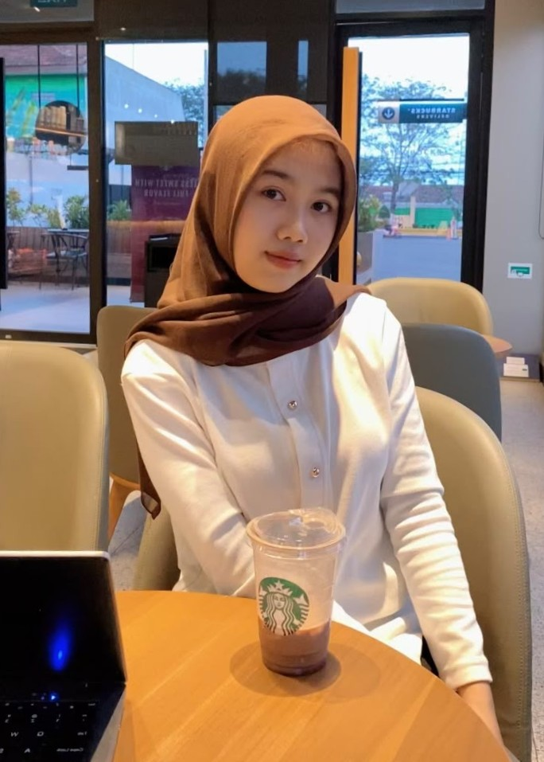

Halo, saya Septia Cahyani Ramadhani—Mahasiswa Manajemen Informatika UNESA yang berfokus pada Web Development dan UI/UX Design untuk menciptakan pengalaman digital yang intuitif, estetis, dan responsif.
Manajemen Informatika UNESA
Web Development & UI/UX Design

Saya percaya bahwa produk digital yang luar biasa lahir dari keseimbangan antara antarmuka yang intuitif dan arsitektur kode yang solid. Sebagai mahasiswa Manajemen Informatika, saya mendedikasikan waktu untuk mendalami Web Development (Full-Stack) serta riset antarmuka (UI/UX Design) guna menghadirkan solusi web yang fungsional dan ramah pengguna.
Membangun struktur web yang semantik, responsif, dan rapi di semua ukuran layar menggunakan teknik layout modern dan Bootstrap.
Pengembangan arsitektur backend aplikasi web, pengelolaan struktur database, integrasi RESTful API, dan pengujian environment data.
Eksplorasi ide melalui riset pengguna, pemetaan alur (User Flow), penyusunan wireframe, hingga pembuatan prototipe interaktif.
Environmental Reporting Platform
Website pelaporan masalah lingkungan dan informasi kampanye lingkungan secara terpadu.
Digital Banking & Financial Solution
Perancangan antarmuka aplikasi perbankan digital yang aman, intuitif, dan memudahkan alur transaksi pengguna.
Healthcare & Monitoring System
Sistem informasi pencatatan dan pemantauan kesehatan balita serta ibu hamil untuk mempermudah pelayanan kader Posyandu secara digital.